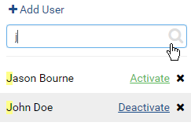
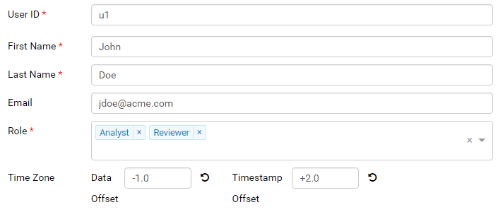
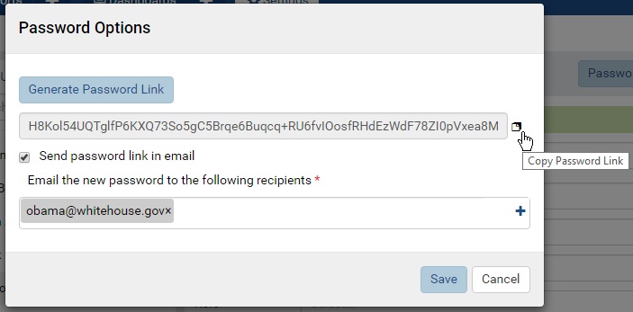

User Setup¶
The User Setup page allows user to manage users.
Note
When in integrated mode (DeploymentMode <> 0) adding and removing Users from the UI is not available. This is to ensure the host applicaton and Izenda stay in sync. API’s must be used for these functions in integrated environments. For more information on the API’s please review the documentation here.
List and View Users¶
- In browser, log in to Izenda as a user with User Setup permissions.
- Click Settings, then User Setup in the left menu.
- Select the Setting Level: either System or a specific tenant.
- List of user names and statuses will be displayed in the Middle Panel.
- Click any user in the list.
- The user’s information will be displayed in the Details section.
{kind=link}
Fig. 116 User Setup List and Details
Search for Users¶
The Search box at the top allows searching for specific users.
- 
Fig. 117 Search for Users
Type a partial name and click the search icon (🔍).
Only matching users will be displayed in the list.
Clear the search box to see the full list.
{kind=link}
Add User¶
Click the + Add User button at the top.
The Details section will be cleared to enter the user information.
Fig. 118 Add a User
Enter a unique user id, then the first name and last name.
An email address is not required, but is recommended for password retrieval and report subscriptions.
Select roles from the drop-down.
Enter the time zone adjustments into Data Offset and Time Offset boxes.
Data Offset: the time shift to be applied to datetime data from client database connections to match user’s local time zone. As of v2.9.5 offset will accept partial hours as .25, .5, .75
For example, the data from client database connections are in Estern Time “UTC-05:00” and the user being created is in Central Time “UTC-06:00”, then the value “-1” hour should be entered into Data Offset. (It is easiest to use an online time zone converter to find out this value)
Timestamp Offset: the time shift to be applied to timestamp data (created date time, last updated date time) from UTC to match user’s local time zone. As of v2.9.5 offset will accept partial hours as .25, .5, .75
For example, current UTC time is “02:00” the user being created is in Central Time “UTC-05:00”, then the value “-5” hours should be entered into Timestamp Offset. (It is easiest to use an online time zone converter to find out this value)
Click the Password Options button at the top to open Password Options pop-up.
Fig. 119 Password Options
Click Generate Password Link button to generate the password link.
- Either click the copy icon (that looks a bit like this ❐) to copy the password link to clipboard then send to the user.
- Or tick the Send password link in email checkbox then select the user email from the drop-down.
Click Save to close the pop-up.
Click the Save button at the top.
The new user will appear in the list in Middle Panel.
Click the Activate link next to the user in Middle Panel to make him/her active.
{kind=link}
{kind=link}
Add a System Admin user¶
Additional system admin users can be created by:
- Select System Setting Level.
- Tick the System Admin check-box.
- Enter the unique user id, then first name, last name and email address.
- There is no role assignment for a System Admin.
- Enter the remaining information then set up password options similarly to a normal user.
Edit User Details¶
Click the user in the list in Middle Panel.
The user’s information is displayed in the Details section.
Edit the information.
Click the Save button at the top, then OK in the confirmation pop-up.
User ID is unique and will be checked before saving.
Deactivate User¶
- Untick the Active checkbox (☑) of the user in Middle Panel.
- Click OK in the confirmation pop-up.
- The user becomes inactive. He/she can no longer log into the system.
Note
The Cancel button at the top will have no effect in this case.
Delete User¶
- Click the Delete icon (x) of each user.
- Click OK in the confirmation pop-up.
- The user is deleted and removed from the list in Middle Panel.
Note
The Cancel button at the top will have no effect in this case.
Change a Password¶
To change a password, select the user then click Password Options button and follow the steps in Add User section.
Integrated Mode Behavior¶
When running inside an existing system:
- Izenda inherits the list of users with basic information User ID, First Name, Last Name and Email.
- Users cannot be deleted or added, and basic information cannot be changed from within Izenda system.